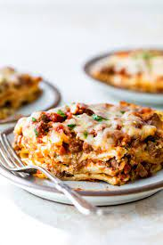

Home
Lasagna

Description
When John Chandler submitted this lasagna recipe to Allrecipes more than 20 years ago, he had no idea how
successful it would become. One of our top-performing recipes of all time, World's Best Lasagna racks up more
than 7 million views per year and has ranked among the most popular lasagna recipes on the internet for two
decades. Unfortunately, John unexpectedly passed away at 53 years old — read all about his life and legacy here.
Make our most popular lasagna today to find out what all the fuss is about!
Ingredients
- Sausage
- Ground Beef
- Minced Onion
- Garlic
- Tomatoes
- Tomato Sauce
- Tomato Paste
- Water
- White Sugar
- Parsley
- Basil
- Salt
- Italian Seasoning
- Fennel Seeds
- Black Pepper
- Lasagna Noodles
- Ricotta Cheese
- Egg
- Mozzarella Cheese
- Parmesan Cheese
Steps
- Cook sausage, ground beef, onion, and garlic
- Stir in crushed tomatoes, tomato sauce, tomato paste, and water
- Season with sugar, parsley, basil, salt, italian seasoning, fennel seeds, and pepper
- Simmer, covered for about 1 1/2 hours
- Boil water and cook lasagna noodles
- Mix together ricotta cheese with egg, parsley, and salt
- Preheat oven to 375 degrees F
- Spread thin layer meat sauce in bottom of a baking dish. Add a layer of noodles,
followed by the ricotta cheese mixture, then the mozzarella cheese. Continue this layering
pattern.
- Cover with tinfoil and bake for 25 minutes
- Remove tinfoil and continue baking for 25 minutes
Credit
Lasagna recipe sourced from allrecipes